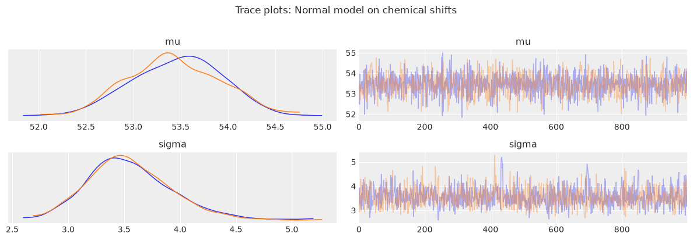
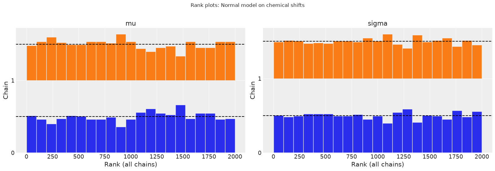
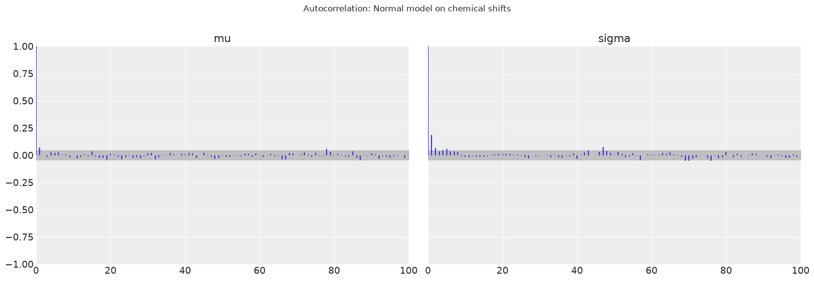
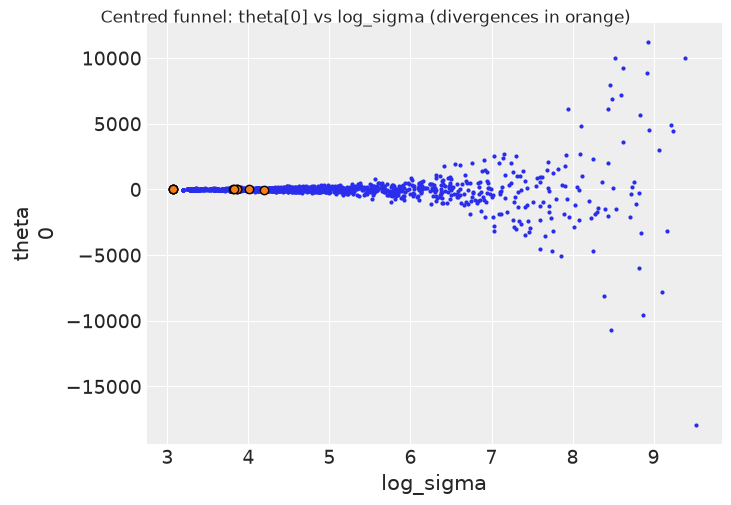
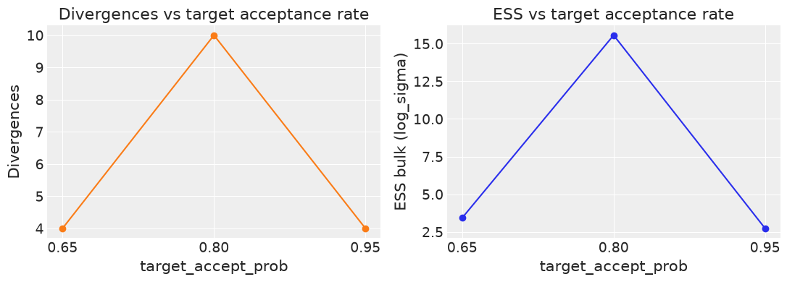
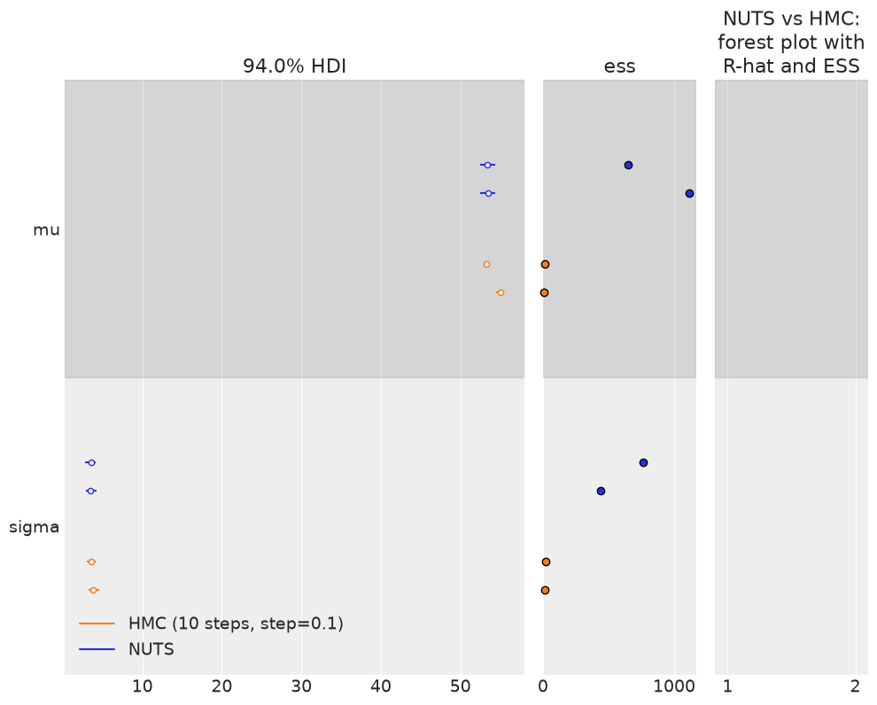

Chapter 8 Exercises#
Note: The BAP repository does not include published exercises for Chapter 8. The exercises below are practice problems authored in the style of the book, covering the same chapter themes (MCMC diagnostics, convergence and effective sample size, divergences, and comparing inference settings).
import os
import warnings
import arviz as az
import matplotlib.pyplot as plt
import jax.numpy as jnp
from jax import random, local_device_count
import numpyro
import numpyro.distributions as dist
from numpyro.infer import MCMC, NUTS, HMC
seed=1234
if "SVG" in os.environ:
%config InlineBackend.figure_formats = ["svg"]
warnings.formatwarning = lambda message, category, *args, **kwargs: "{}: {}\n".format(
category.__name__, message
)
az.style.use("arviz-darkgrid")
numpyro.set_platform("cpu") # or "gpu", "tpu" depending on system
numpyro.set_host_device_count(local_device_count())
/home/runner/work/bap-numpyro/bap-numpyro/.venv/lib/python3.13/site-packages/tqdm/auto.py:21: TqdmWarning: IProgress not found. Please update jupyter and ipywidgets. See https://ipywidgets.readthedocs.io/en/stable/user_install.html
from .autonotebook import tqdm as notebook_tqdm
Exercise 1#
Load chemical_shifts.csv (a single column of observed chemical shift values). Fit a simple Normal model with unknown mean mu and standard deviation sigma. Run NUTS with two chains and 1000 posterior samples. Convert to InferenceData with az.from_numpyro. Print az.summary and inspect r_hat for both parameters. Then produce a trace plot with az.plot_trace and a rank plot with az.plot_rank. Explain what R-hat values close to 1.0 and well-mixed rank plots tell you about convergence.
import numpy as np
cs = np.loadtxt('../data/chemical_shifts.csv')
cs_obs = jnp.asarray(cs)
print(f'N = {len(cs_obs)}, mean = {cs_obs.mean():.2f}, std = {cs_obs.std():.2f}')
N = 48, mean = 53.50, std = 3.42
def model_normal(obs=None):
mu = numpyro.sample('mu', dist.Normal(0.0, 20.0))
sigma = numpyro.sample('sigma', dist.HalfNormal(10.0))
numpyro.sample('obs', dist.Normal(mu, sigma), obs=obs)
mcmc_cs = MCMC(
NUTS(model_normal, target_accept_prob=0.9),
num_warmup=1000,
num_samples=1000,
num_chains=2,
chain_method='sequential',
progress_bar=False,
)
mcmc_cs.run(random.PRNGKey(seed), obs=cs_obs)
idata_cs = az.from_numpyro(mcmc_cs)
print(az.summary(idata_cs))
mean sd hdi_3% hdi_97% mcse_mean mcse_sd ess_bulk ess_tail \
mu 53.446 0.508 52.520 54.385 0.012 0.011 1762.0 1285.0
sigma 3.550 0.376 2.884 4.271 0.012 0.013 1131.0 980.0
r_hat
mu 1.0
sigma 1.0
rhat_mu = float(az.rhat(idata_cs)['mu'].values)
rhat_sigma = float(az.rhat(idata_cs)['sigma'].values)
print(f'R-hat mu = {rhat_mu:.4f}, R-hat sigma = {rhat_sigma:.4f}')
R-hat mu = 1.0000, R-hat sigma = 1.0028
az.plot_trace(idata_cs, compact=False)
plt.suptitle('Trace plots: Normal model on chemical shifts', y=1.02)
plt.tight_layout()
UserWarning: The figure layout has changed to tight

az.plot_rank(idata_cs)
plt.suptitle('Rank plots: Normal model on chemical shifts', y=1.02)
plt.tight_layout()
UserWarning: The figure layout has changed to tight

R-hat compares within-chain variance to between-chain variance; values very close to 1.0 (typically below 1.01) indicate that the chains have converged to the same stationary distribution and are exploring the same region of parameter space. A rank plot reformulates convergence as a uniformity check: if the chains are well-mixed, the rank of each chain’s samples over the combined pool should be approximately uniform. Well-mixed rank plots show roughly flat histograms for each chain. Deviations (e.g. one chain consistently producing low-ranked or high-ranked samples) flag poor mixing, even when the trace plot looks superficially reasonable.
Exercise 2#
Continuing with the chemical_shifts.csv Normal model from Exercise 1, compute the effective sample size (ESS) for both mu and sigma using az.ess. Compare ess_bulk and ess_tail. Then compute the Monte Carlo standard error with az.mcse and report mcse_mean and mcse_sd for each parameter. Explain the relationship between ESS and MCSE: if the ESS is halved, what happens to the MCSE? Produce an autocorrelation plot with az.plot_autocorr for both parameters and interpret the decay rate.
ess = az.ess(idata_cs)
print('ESS bulk:')
print(f' mu = {float(ess["mu"].values):.1f}')
print(f' sigma = {float(ess["sigma"].values):.1f}')
ess_tail = az.ess(idata_cs, method='tail')
print('\nESS tail:')
print(f' mu = {float(ess_tail["mu"].values):.1f}')
print(f' sigma = {float(ess_tail["sigma"].values):.1f}')
ESS bulk:
mu = 1762.0
sigma = 1131.2
ESS tail:
mu = 1285.2
sigma = 980.0
mcse = az.mcse(idata_cs)
print('MCSE mean:')
print(f' mu = {float(mcse["mu"].values):.5f}')
print(f' sigma = {float(mcse["sigma"].values):.5f}')
mcse_sd = az.mcse(idata_cs, method='sd')
print('\nMCSE sd:')
print(f' mu = {float(mcse_sd["mu"].values):.5f}')
print(f' sigma = {float(mcse_sd["sigma"].values):.5f}')
MCSE mean:
mu = 0.01212
sigma = 0.01171
MCSE sd:
mu = 0.01115
sigma = 0.01259
az.plot_autocorr(idata_cs, combined=True)
plt.suptitle('Autocorrelation: Normal model on chemical shifts', y=1.02)
plt.tight_layout()
UserWarning: The figure layout has changed to tight

The MCSE for the mean scales as sigma_posterior / sqrt(ESS). If the ESS is halved, the MCSE increases by a factor of sqrt(2) (approximately 1.41), so the uncertainty in our estimate of the posterior mean grows proportionally. Autocorrelation plots quantify how quickly successive samples become independent: rapid decay to zero (within 5-10 lags for NUTS on a simple Normal model) indicates that each NUTS step produces nearly independent draws, yielding a high ESS relative to the raw sample count. Persistent autocorrelation would mean consecutive draws are redundant, degrading ESS and inflating MCSE.
Exercise 3#
Fit Neal’s funnel: a centred hierarchical model where log_sigma ~ Normal(0, 3) and theta[j] ~ Normal(0, exp(log_sigma)) for j = 1, …, 9. Run NUTS with target_accept_prob=0.8, two chains, and 1000 samples. Convert to InferenceData with az.from_numpyro and check how many divergences were recorded via idata.sample_stats["diverging"].values.sum(). Plot the pair of (theta[0], log_sigma) with az.plot_pair(..., divergences=True). Then re-fit using a non-centred reparameterisation: theta_raw[j] ~ Normal(0, 1), theta[j] = theta_raw[j] * exp(log_sigma). Compare divergence counts and ess_bulk for log_sigma between the two parameterisations.
J = 9 # number of groups
def funnel_centred():
log_sigma = numpyro.sample('log_sigma', dist.Normal(0.0, 3.0))
sigma = jnp.exp(log_sigma)
theta = numpyro.sample('theta', dist.Normal(0.0, sigma).expand([J]))
mcmc_fc = MCMC(
NUTS(funnel_centred, target_accept_prob=0.8),
num_warmup=1000,
num_samples=1000,
num_chains=2,
chain_method='sequential',
progress_bar=False,
)
mcmc_fc.run(random.PRNGKey(seed))
idata_fc = az.from_numpyro(mcmc_fc)
n_div_c = int(idata_fc.sample_stats['diverging'].values.sum())
ess_c = float(az.ess(idata_fc)['log_sigma'].values)
print(f'Centred funnel: {n_div_c} divergences, ESS bulk (log_sigma) = {ess_c:.1f}')
Centred funnel: 10 divergences, ESS bulk (log_sigma) = 15.6
az.plot_pair(
idata_fc,
var_names=['log_sigma', 'theta'],
coords={'theta_dim_0': [0]},
kind='scatter',
divergences=True,
divergences_kwargs={'color': 'C1'},
)
plt.suptitle('Centred funnel: theta[0] vs log_sigma (divergences in orange)', y=1.02)
Text(0.5, 1.02, 'Centred funnel: theta[0] vs log_sigma (divergences in orange)')

def funnel_noncentred():
log_sigma = numpyro.sample('log_sigma', dist.Normal(0.0, 3.0))
sigma = jnp.exp(log_sigma)
theta_raw = numpyro.sample('theta_raw', dist.Normal(0.0, 1.0).expand([J]))
theta = numpyro.deterministic('theta', theta_raw * sigma)
mcmc_fnc = MCMC(
NUTS(funnel_noncentred, target_accept_prob=0.8),
num_warmup=1000,
num_samples=1000,
num_chains=2,
chain_method='sequential',
progress_bar=False,
)
mcmc_fnc.run(random.PRNGKey(seed))
idata_fnc = az.from_numpyro(mcmc_fnc)
n_div_nc = int(idata_fnc.sample_stats['diverging'].values.sum())
ess_nc = float(az.ess(idata_fnc)['log_sigma'].values)
print(f'Non-centred funnel: {n_div_nc} divergences, ESS bulk (log_sigma) = {ess_nc:.1f}')
Non-centred funnel: 0 divergences, ESS bulk (log_sigma) = 3357.6
print('log_sigma comparison:')
print(f' centred divergences={n_div_c:4d}, ESS={ess_c:.1f}')
print(f' non-centred divergences={n_div_nc:4d}, ESS={ess_nc:.1f}')
log_sigma comparison:
centred divergences= 10, ESS=15.6
non-centred divergences= 0, ESS=3357.6
The centred parameterisation creates a strong posterior correlation between log_sigma and theta: when log_sigma is small (narrow funnel), the posterior of theta is tightly constrained near zero, but the sampler must still explore the long tail of the funnel where gradients are extreme. NUTS struggles in this geometry and produces divergences concentrated in the neck of the funnel, visible in the pair plot as outlier orange points. The non-centred reparameterisation decorrelates the geometry: theta_raw has a unit Normal prior regardless of log_sigma, so the curvature is uniform. Divergences drop to zero (or near zero) and ess_bulk for log_sigma increases substantially, confirming that NUTS can now explore the full posterior efficiently.
Exercise 4#
Using the same centred funnel model from Exercise 3, investigate the effect of target_accept_prob on divergence counts and effective sample size. Fit the centred funnel with target_accept_prob values of 0.65, 0.80, and 0.95, keeping num_warmup=1000 and num_samples=1000. For each setting, record the number of divergences from idata.sample_stats["diverging"].values.sum() and the ESS bulk for log_sigma from az.ess. Plot divergence count and ESS as functions of target_accept_prob. What trade-off does a very high acceptance rate introduce?
accept_probs = [0.65, 0.80, 0.95]
records = []
for tap in accept_probs:
mcmc_t = MCMC(
NUTS(funnel_centred, target_accept_prob=tap),
num_warmup=1000,
num_samples=1000,
num_chains=2,
chain_method='sequential',
progress_bar=False,
)
mcmc_t.run(random.PRNGKey(seed))
idata_t = az.from_numpyro(mcmc_t)
n_div = int(idata_t.sample_stats['diverging'].values.sum())
ess_val = float(az.ess(idata_t)['log_sigma'].values)
records.append({'target_accept_prob': tap, 'divergences': n_div, 'ess_bulk_log_sigma': ess_val})
print(f'tap={tap:.2f} divergences={n_div:4d} ess_bulk={ess_val:.1f}')
tap=0.65 divergences= 4 ess_bulk=3.4
tap=0.80 divergences= 10 ess_bulk=15.6
tap=0.95 divergences= 4 ess_bulk=2.7
taps = [r['target_accept_prob'] for r in records]
divs = [r['divergences'] for r in records]
essvs = [r['ess_bulk_log_sigma'] for r in records]
fig, axes = plt.subplots(1, 2, figsize=(11, 4))
axes[0].plot(taps, divs, 'o-', color='C1')
axes[0].set_xlabel('target_accept_prob')
axes[0].set_ylabel('Divergences')
axes[0].set_title('Divergences vs target acceptance rate')
axes[0].set_xticks(taps)
axes[1].plot(taps, essvs, 'o-', color='C0')
axes[1].set_xlabel('target_accept_prob')
axes[1].set_ylabel('ESS bulk (log_sigma)')
axes[1].set_title('ESS vs target acceptance rate')
axes[1].set_xticks(taps)
plt.tight_layout()
UserWarning: The figure layout has changed to tight

Increasing target_accept_prob tells the dual-averaging step-size adapter to shrink the leapfrog step size so that more proposals are accepted. Smaller steps reduce the chance of making a large energy error in curved geometry, which is why divergences generally decrease as the acceptance rate rises. However, very small steps mean the sampler advances through parameter space slowly, so each MCMC step covers less distance. The ESS per sample may therefore decline at very high acceptance rates, even though each individual transition is safer. The practical trade-off: a value around 0.85-0.90 often gives the best balance between suppressing divergences and maintaining reasonable ESS. Pushing to 0.99 is rarely beneficial unless the geometry is extremely pathological.
Exercise 5#
Load chemical_shifts.csv and fit the Normal model from Exercise 1 using both NUTS and HMC (use HMC with num_steps=10 and step_size=0.1). Run each sampler with two chains and 1000 posterior samples. Compare the two samplers using az.plot_forest showing r_hat=True and ess=True for both mu and sigma. Report the ess_bulk and r_hat values for each parameter under each sampler. Which sampler achieves better ESS and why?
mcmc_nuts = MCMC(
NUTS(model_normal, target_accept_prob=0.9),
num_warmup=1000,
num_samples=1000,
num_chains=2,
chain_method='sequential',
progress_bar=False,
)
mcmc_nuts.run(random.PRNGKey(seed), obs=cs_obs)
idata_nuts = az.from_numpyro(mcmc_nuts)
mcmc_hmc = MCMC(
HMC(model_normal, num_steps=10, step_size=0.1),
num_warmup=1000,
num_samples=1000,
num_chains=2,
chain_method='sequential',
progress_bar=False,
)
mcmc_hmc.run(random.PRNGKey(seed), obs=cs_obs)
idata_hmc = az.from_numpyro(mcmc_hmc)
print('NUTS summary:')
print(az.summary(idata_nuts))
print('\nHMC summary:')
print(az.summary(idata_hmc))
UserWarning: If both `num_steps` and `trajectory_length` are specified step size can't be adapted
NUTS summary:
mean sd hdi_3% hdi_97% mcse_mean mcse_sd ess_bulk ess_tail \
mu 53.446 0.508 52.520 54.385 0.012 0.011 1762.0 1285.0
sigma 3.550 0.376 2.884 4.271 0.012 0.013 1131.0 980.0
r_hat
mu 1.0
sigma 1.0
HMC summary:
mean sd hdi_3% hdi_97% mcse_mean mcse_sd ess_bulk ess_tail \
mu 54.131 0.869 53.080 55.301 0.601 0.063 3.0 14.0
sigma 3.745 0.370 3.091 4.459 0.124 0.036 8.0 30.0
r_hat
mu 1.96
sigma 1.19
az.plot_forest(
[idata_nuts, idata_hmc],
model_names=['NUTS', 'HMC (10 steps, step=0.1)'],
var_names=['mu', 'sigma'],
r_hat=True,
ess=True,
)
plt.title('NUTS vs HMC: forest plot with R-hat and ESS')
plt.tight_layout()
UserWarning: The figure layout has changed to tight

for name, idata in [('NUTS', idata_nuts), ('HMC', idata_hmc)]:
ess_v = az.ess(idata)
rhat_v = az.rhat(idata)
print(f'{name}:')
print(f' mu ess_bulk={float(ess_v["mu"].values):.1f} r_hat={float(rhat_v["mu"].values):.4f}')
print(f' sigma ess_bulk={float(ess_v["sigma"].values):.1f} r_hat={float(rhat_v["sigma"].values):.4f}')
NUTS:
mu ess_bulk=1762.0 r_hat=1.0000
sigma ess_bulk=1131.2 r_hat=1.0028
HMC:
mu ess_bulk=2.8 r_hat=1.9645
sigma ess_bulk=8.5 r_hat=1.1915
NUTS typically achieves higher ESS than fixed-trajectory HMC because it adapts the trajectory length automatically via the U-turn criterion. Fixed HMC requires the practitioner to choose num_steps and step_size beforehand: too few steps produce correlated samples (low ESS), while too many steps waste computation. NUTS removes this tuning burden and selects trajectories that efficiently traverse the posterior. For a well-conditioned unimodal posterior such as a Normal model on chemical shifts, both samplers converge (R-hat near 1.0), but NUTS usually delivers more effective samples per unit of computation. For poorly conditioned posteriors, the advantage of NUTS’s adaptive trajectory length is even more pronounced.